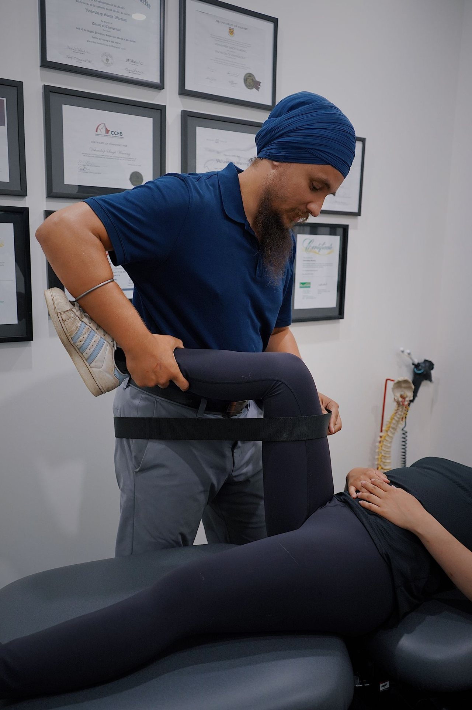
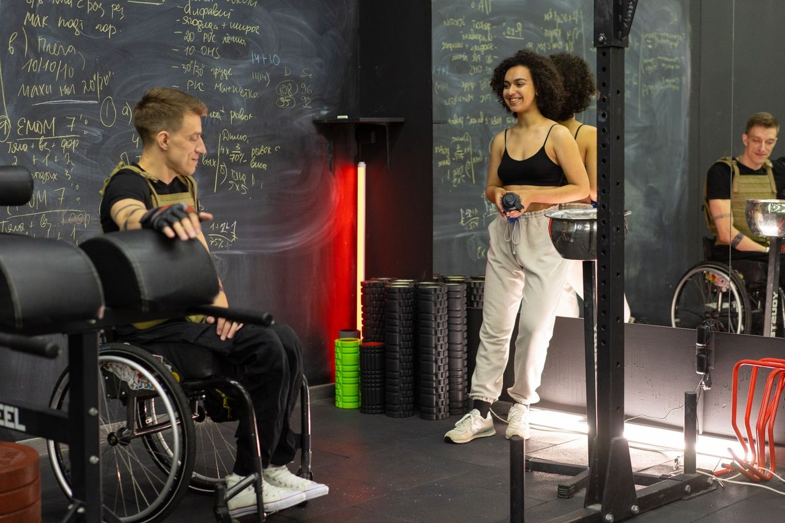
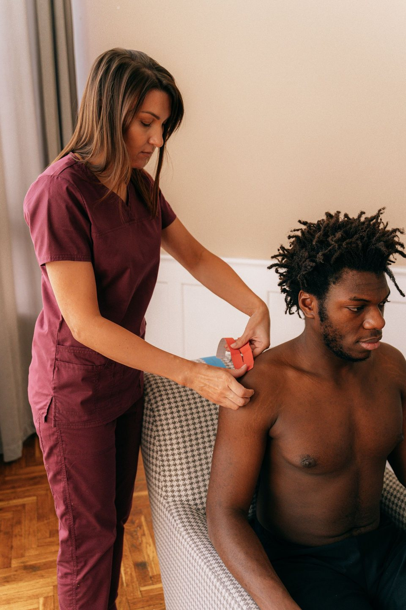
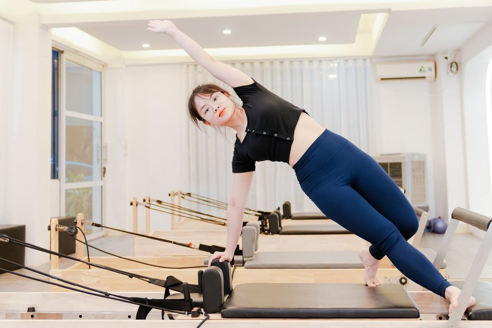

Écouter
Comprendre ce que vous ressentez et ce qui compte dans votre quotidien.
Tinashe Nicole · Kinésithérapeute
Une kinésithérapie attentive et progressive, orientée vers le mouvement. Chaque accompagnement commence par l’écoute de votre situation et de vos objectifs.

Notre approche
Chaque parcours commence par un temps d’écoute et d’évaluation. Ensemble, nous définissons des objectifs réalistes, puis nous adaptons l’accompagnement à votre histoire, vos activités et votre rythme.
Comprendre ce que vous ressentez et ce qui compte dans votre quotidien.
Partager des repères clairs pour avancer avec confiance dans votre parcours.
Ajuster les soins et les exercices au fil de votre évolution, sans précipitation.

Rééducation sportive
Après une blessure ou une période d’arrêt, l’accompagnement vise à retrouver de la mobilité, reconstruire la force et préparer un retour progressif à l’activité physique ou au sport.
Un parcours adapté à votre situation et à votre évolution.
Des exercices progressifs pour soutenir le mouvement et la capacité physique.
Une reprise graduelle, guidée par vos objectifs et vos sensations.
Les soins
Retour à l’activité, récupération après blessure, mobilité, force et reprise progressive du sport.
En savoir plusConsultez les informations disponibles et choisissez un créneau sur le profil Doctena de Tinashe Nicole.
Ouvrir DoctenaChoisissez directement un créneau disponible sur le profil Doctena de Tinashe Nicole.
Prendre rendez-vous

À propos
Tinashe Nicole reçoit ses patients à Hutano.kine, au centre de Luxembourg, pour des consultations de kinésithérapie.
Pour consulter les informations disponibles et choisir un créneau, rendez-vous directement sur son profil Doctena.
Chaque reprise se construit avec méthode, régularité et confiance.
Questions fréquentes
Quelques repères pour préparer votre venue sereinement.
La première séance comprend généralement un échange sur votre situation et une évaluation adaptée. Les modalités précises seront confirmées par le cabinet.
Les documents utiles et la tenue conseillée dépendent de votre motif de consultation. Le cabinet vous précisera ce qu’il faut prévoir lors de la prise de rendez-vous.
Les règles peuvent varier selon votre situation et votre couverture. Consultez le profil Doctena pour les informations disponibles et la prise de rendez-vous.
La durée d’un accompagnement dépend de vos besoins, de vos objectifs et de votre évolution. Un point régulier permet d’adapter la prise en charge.
Rendez-vous
Consultez les disponibilités et réservez directement sur le profil Doctena de Tinashe Nicole.